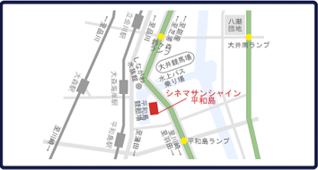

日本初、DOLBY ATMOSとimm soundを備えた最新音響シアター“アメイジング・サウンドシアター”
自然でリアルな音場を、客席を取り囲んで配置されたスピーカーによってこれまでに体験したことのないような迫力で体感できるDOLBY ATMOS。
前後左右、スクリーンや天井にもスピーカーを設置し、観客を包み込むような音響で、まるでその場にいるような臨場感のある音響体験ができるimm sound。
この二つの音響システムを兼ね備えた国内唯一のプレミアムシアターが“アメイジング・サウンドシアター”です。
“アメイジング・サウンドシアター”では、DOLBY ATMOS対応作品のみならず、imm soundの設備によりその他の作品も常に最高の音響環境でお楽しみいただくことが可能です。
最高の音響で楽しんでいただきたい作品をラインナップし、皆様をお待ちしております。

東京都大田区平和島１-１-１ ビッグファン平和島４Ｆ
京浜急行平和島駅、または大森海岸駅より徒歩１０分
第一京浜平和島交差点より１分 平和島競艇場となり

２４時間上映時間案内 ０３－５７６４－８８０３
劇場HPはコチラから